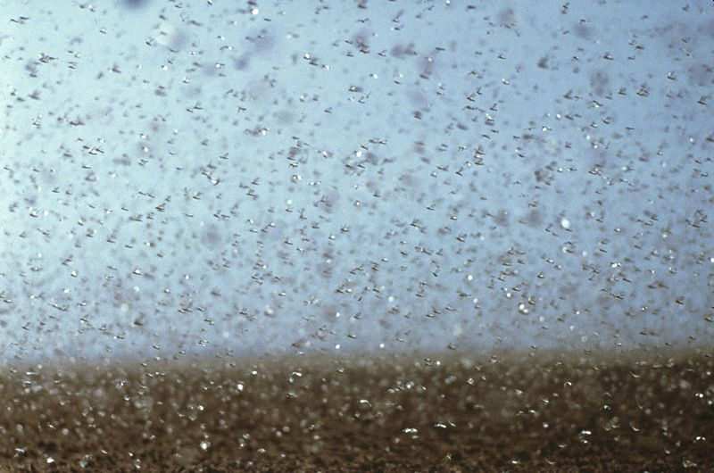

Kolonist in Ambrosetti
Es traf sich, dass 1893/94 220 km nördlich von San Jerónimo Norte für die Sekundärkolonie Ambrosetti Land neu vermessen wurde. Dort siedelten sich innerhalb von zwei Jahren 40 Familien an, ausschliesslich Walliser Immigranten oder Nachkommen derselben. In SJ war die verfügbare landwirtschaftlich Nutzfläche längst verteilt; hier bekam man allerhöchstens Pachtland. Boden erwerben konnte man nur, wenn ein Kolonist den eigenen oder Teile davon verkaufte.
Impulsiv und entschlossen, wie Johann Christian Theler war, wollte er die Chance in Ambrosetti packen. Umso mehr, als die Landverkäufer, die Gebrüder Ambrosetti aus Buenos Aires, keine Anzahlung verlangten. Ihr Ziel war es, das Gebiet durch Leute, die fleissig sind und das Land bearbeiten und [es] zu einer blühenden Colonie zu machen*.* *Jetzt wird mit neuem Mut drauflos gesteuert*, heisst es im Rückblick. Da er noch kein Spanisch sprach, begleitete ihn ein Landsmann zum Landverkäufer ins 80 km entfernte San Vicente. Ausgestattet mit dem Plan der verkauften und noch freien Lose begab er sich unverzüglich nach Ambrosetti, besichtigte in Begleitung bereits ansässiger Ex-Walliser die Kolonie, wählte angeblich zwei Lose bzw. 200 ha aus und fuhr zurück nach San Vincente, um sich das Land vertraglich zu sichern. Da die Hektare seinen Ausführungen gemäss 25 Pesos kostete, hätte er nach dem Kauf eine Landschuld von 5000 Pesos gehabt. Im «Schreibkalender» (künftig ‘Kalender’ genannt), den er während der Zeit in Argentinien regelmässig nachführte, heisst es dagegen, er habe im März 1894 *16 Concessionen Kampa gekauft* *zu 8230.00 Pesos*.1 Eine Konzession umfasste eine Fläche von 25 Hektar. Theler kaufte also vier Lose, jedes einen Quadratkilometer gross. Ob er eine Fläche dieser Grösse je würde bewirtschaften können, schien er sich nicht zu fragen. Da er die Landschuld mit zwölf Prozent verzinsen musste, wurden ab diesem Zeitpunkt jährlich nahezu 1'000 Pesos Zins fällig. Ausserdem stellte der Landverkäufer Alvares für seine Arbeit seinerseits 400 Pesos (und später noch weitere Beträge) in Rechnung. Dafür hatte er ein *Pagare*, einen *in kurzen Tagen* fälligen Schuldschein, zu unterschreiben.
Offenbar entschied Thelers diesen Kauf einmal mehr, ohne mit seiner Frau gesprochen zu haben. Er ging ein beträchtliches Risiko ein. Seine Hoffnung, der Onkel in Hipatía werde ihm, dem frischgebackenen Grundbesitzer, die 400 Pesos für die Vermittlungsgebühr leihen, war naiv. Als er dort vorsprach, bekam er zur Antwort, in der weiten Wildnis Land zu erwerben, sei unsinnig; das sei verlorenes Geld. So musste er, bevor er irgendetwas anderes in Angriff nahm, den Landvermittler brieflich darum bitten, die Fälligkeit des Schuldscheins auf unbestimmte Zeit hinauszuschieben.
Vor dem Umzug nach Ambrosetti wollte er zwei Ochsen fürs Pflügen und zwei Kühe mit Kälbern kaufen. Zwei Kühe bekamen sie geschenkt. Was die Zugochsen betraf, so nutzten sie die Gelegenheit, den Sohn des reichen, aber knausrigen Onkels deswegen anzusprechen. Der war nämlich gerade zu Besuch bei der gemeinsamen Kusine Luzia. Zugegen war auch Thelers Frau, und für einmal nahm sie das Heft in die Hand. Sie bat ihren Vetter darum, ihnen einige Ochsen und Kühe zu verkaufen. Preis und Zins könnten sie nach Gutdünken festlegen; man werde sie einst von Ambrosetti aus bezahlen können. Der Mann lehnte ab, worauf Zmarjosi ihn und seine Familie in einer Weise auszuschimpfen anfing, dass er klein beigab und ihnen zwei Ochsen, vier Kühe mit Kälbern zu verkaufen versprach. In der Rückschau schreibt Theler: Die Weiber, was die vermögen! Dass er selber sich zwar seinerzeit gegen den Vater durchgesetzt hatte, als es um die Heirat mit der Tochter der Familie Salzgeber ging, dass er sonst jedoch kaum je für seine Sache kämpfte und erstaunlich vertrauensselig agierte, bestätigte sich hier ein weiteres Mal. Die Behauptung sei erlaubt, dass das Ehepaar im gemeinsamen Tun oftmals erfolgreicher gewesen wären als er als Einzelperson.
Nachdem sich Theler in Hipatía mit Onkel Joseph bezüglich des Viehkaufs schliesslich hatte verständigen können, was Preis, den Zins (10%) und die Bezahlung betraf, machte er sich im April 1894 zusammen mit einem Knecht auf den Weg nach Ambrosetti. Den grössten Teil der Strecke konnten sie mit dem Zug zurücklegen; die letzten 25 km mussten sie zu Fuss gehen. Vor Ort schritten sie das riesige Grundstück kreuz und quer ab, um den günstigsten Platz zum Bauen zu finden. Vor Ort gab es bloss erste von den Ansiedlern gebahnte Fusspfade. Die Lose waren in 100-ha-Quadrate vermessen und an den Ecken mit Markierungen voneinander abgetrennt. Weil das Gras hoch stand, steckten sie an den Eckpunkten Fahnen und marschierten dann möglichst schnurgerade von einer Fahne zur nächsten, die wenn möglich meterlangen Schritte gezählt und so das Land einigermassen eingeteilt in Ackerland, Weideland und Hausenschaft (Platz für Haus und Wirtschaftsgebäude). In der ersten Nacht schliefen sie unter freiem Himmel, dann bekamen sie ein Zelt geborgt. Bevor sie mit dem Bau einer behelfsmässigen Unterkunft beginnen konnten, gings ans Brunnengraben. Schon am ersten Arbeitstag stiessen sie in vier Metern Tiefe auf Wasser. Damit war das Hauptproblem gelöst. Als Baumaterial sollten Rasenziegel verwendet werden. Dies geschah mit einer extra hiefür geeigneten 15 cm breiten geraden Stechschaufel. Die Ziegel wurden 20 auf 40 cm abgestochen, ausgehoben, zirka 20 cm dick, an der Sonne getrocknet. Auf einem unvollständig gerodeten Landstück standen noch Eisenholz-Bäume, aus denen sie Eck- und Firstpfosten gewinnen wollten.2 Holz fürs Dach kaufte Theler in einem Ort in der Nähe. Auch 50 Jahre später war er noch immer stolz, dass nach einem Monat die erste und schönste Hütte von Ambrosetti fix und fertig erstellt gewesen sei, sogar mit 2 Glasfenstern und einer schliessbaren Doppeltür, gedeckt mit Schilf. Die Rasenziegelhütte hätte ihnen über zehn Jahre lang gute Dienste geleistet. Im Winter war sie warm, im Sommer kühl. Doch musste alle 2 Jahre mit Schilf nachgedeckt werden.
Nun sollte die Übersiedlung der Familie nach Ambrosetti vollzogen werden, aber das Geld reichte nicht einmal für die Fahrkarten. Ein Nachbar war hilfsbereit genug, ihnen mit 200 Pesos auszuhelfen, ohne im Übrigen einen Beleg dafür einzufordern. (Spontane und unkomplizierte Hilfe wie hier wurde Theler, seit er als Jugendlicher dem Lehrmeister davongelaufen war, immer wieder zuteil.) Geldsorgen blieben trotzdem weiterhin ständige Begleiter. Theler erinnert sich an Situationen purer Hilflosigkeit. Als er zum Beispiel kurz nach der Übersiedlung in Hersilia ein paar Dinge für den Haushalt kaufen wollte, hatte er nicht genug Geld. Dabei sollte er noch Tuch für Kinderhosen heimbringen. Der Krämer weigerte sich, ihm den Betrag dafür bis zum nächsten Einkauf zu stunden. Zum ersten Mal notiert er, dass ihm fast das Augenwasser gekommen sei. Als es auch in Ambrosetti ein Kramladen gab, versuchte er es mit Tauschhandel. Als Gegenleistung für je ein Kilo Mate-Blätter und Zucker bot er Hühner und Eier. Mit Hühnern und Eiern könne er sich in Rosario keinen Zucker und kein Yerba kaufen. So der Krämer. Spontane Hilfe gab es auch hier: Ein Mann, obwohl selbst knapp bei Kasse, steckte ihm einen Peso zu, so dass er den Laden endlich doch mit Tee und Zucker verliess, allerdings mit erdrosseltem Gemüt. Da er von Gemütsbewegungen sonst nie erzählt, kann man sich ausmalen, in welch misslicher finanzieller Lage die Familie die Kolonisten-Existenz startete.
Die Landarbeit kam jedoch voran. Nachdem auch eine Rasenziegel-Hütte als Küche gebaut war, begann Theler mit Pflügen. Als erstes Getreide wollte er Mais pflanzen. Davon konnten sie sich ernähren, damit aber auch Hühner und Schweine füttern. Zwei Ochsen und ein vorgespanntes Pferd, auf dem die fünfeinhalbjährige Regine sass, zogen den Pflug. 25 Hektaren Boden habe er im ersten Jahr umgebrochen, hält er fest. (Das entsprach einer Fläche von 60 Fussballfeldern!) Das ohne Maschine und mit nur einem Pflug zu schaffen, erscheint schier unmöglich. Offenbar liegt aber kein Irrtum vor, denn Theler hält fest, dass er im Jahr darauf die Ackerfläche auf 50 ha verdoppelt habe.
Die Ernte sei so gut gewesen, dass sie erstmals ein paar Säcke Mais (à 100 kg) verkaufen konnten. Viel
Geld nahmen sie dafür nicht ein; pro Sack bekamen sie nur vier Pesos bezahlt.
Ackerflächen dort und hier, damals und heute
Heute, im Jahr 2020, umfasst ein Schweizer Bauernhof im Schnitt 21 Hektar. Das ist im internationalen Vergleich sehr wenig, aber im Unterschied zu den Walliser Kleinbauerngütern um 1900 eine beträchtliche Fläche. In Ausserberg dürften die Bauern damals weniger als fünf Hektaren Land besessen haben, und davon brachen sie für den Kartoffel- und Roggenanbau einige wenige Aren um. Das taten sie in der Regel nicht mit einem Pflug, sondern mit der breiten Hacke, einer sog. Haue. In Ambrosetti stand den Thelers zu Beginn eine Fläche von 400 ha zur Verfügung. Auf einen grossen Teil davon sollte Ackerbau betrieben werden.
Zurzeit lässt Saudi-Arabien zum Beispiel in der Ukraine und in Australien Farmen mit 220'000 Hektaren Fläche bewirtschaften. Zusammengenommen ergäbe das einen Bauernhof, der von Schaffhausen bis Genf reichte. Während in der Ukraine dafür 2600 Personen beschäftigt werden, braucht es in Australien nur 120 Leute. Im Einsatz stehen satellitengesteuerte fahrerlose Traktoren und Drohnen.
Wie oben berichtet, stiessen Theler und sein Knecht nach einem Tag Grabarbeit in vier Metern Tiefe auf Wasser. Zum Vergleich: Als die Saudis noch im eigenen Land Getreide anbauten, mussten sie das Wasser 1000 bis 2000 Meter tief aus dem Boden holen.3
Das Pflügen erfolgte vermutlich nicht in der Art, wie man das heute kennt, v.a. konnte man mit lediglich drei Zugtieren nicht in die Tiefe umbrechen. Das erklärt auch, warum Theler von der ersten Ernte bloss einige Säcke Mais verkaufen konnte. (Heute werden weltweit im Schnitt nahezu sechs Tonnen Körnermais pro Hektar geerntet.) Theler schreibt denn auch, man habe erst nach ergiebigen, acht bis zehn Tage dauernden Niederschlägen mit dem Pflug arbeiten können. Bei Trockenheit brachte man ihn nicht tief genug in den Boden.
In der Regel spannte man vier Ochsen vor den Pflug. Mit nur zwei Ochsen und einem Pferd sei es ein klägliches Vorankommen gewesen. Darum suchte er ein weiteres Mal bei Onkel Joseph Hilfe – und bekam sie diesmal. Der Mann habe inzwischen erfahren, dass weder im Hanschristi noch im Marjosi Faulheit steckte, sondern dass [sie] arbeitswillig waren. Dies brachte ihnen Kredit ein für weitere sechs Ochsen, vier Milchkühe mit Kälbern und eine Stute. Mit den acht Ochsen liess sich ab da eine bedeutend grössere Ackerfläche nutzen. Auch weil Theler nun einen Knecht beschäftigte. Da sie jetzt mehr Milch hatten, stellten sie auch Käse her. Damit erweiterten sie zum einen das Nahrungsangebot für die Familie und konnten zum andern damit beginnen, Produkte aus der Tierhaltung zu verkaufen. (Später Genaueres darüber.) Auch betätigte sich Theler wieder als Handwerker. Die Kolonisten benötigten, wenn sie pflügten oder Güter transportierten, Ochsenjoche. Solche stellte Theler nun im Nebenerwerb her.
Im zweiten Jahr wurde die Ackerfläche, wie erwähnt, auf 50 ha verdoppelt und mit Weizen und Lein4 eingesät. Aber weil Regen ausblieb, war der Ertrag gleich null, der Samen somit verloren. Weil die Brüder Ambrosetti Gefahr liefen, dass die Kolonisten weder die Zinsen bezahlen noch Schulden zurückzahlen konnten, ja, dass einzelne von ihnen wegzogen, stellten sie ihnen vorerst den Samen fürs kommende Jahr zur Verfügung. Die Ernte blieb gering, aber mit dem Verkaufserlös liess sich zumindest der Samen bezahlen. Das vierte Saatjahr säte ich ein, das ganze Los, 100 Hektar, aber leider schon wieder ohne Ernte aus Mangel an Regen und [wegen der] Heuschrecken. Diesmal borgte uns, sämtlichen Colonisten, die Regierung den Samen. Abermals gab es nur eine ganz geringe Ernte, wenigstens soviel, dass ich ausser doppelter Saat die Schuld von 400 Pesos nebst Zins an Alvares bezahlen konnte. Auch 200 Pesos an einen Landsmann konnte er zurückzahlen. In den Folgejahren wechselten sich kleine Ernten und Totalausfälle ab. Die Kalendereinträge geben dazu ein genaueres Bild. Bis ins Jahr 1906 sind die Mengen ausgebrachten Saatguts, dessen Kosten sowie Erträge, Verkaufserlöse und Angaben über Reingewinne festgehalten. Die nach den ersten drei Ernten erzielten Einkünfte deckten jeweils knapp die Ausgaben fürs Saatgut. Die Ernten von 1897 und 1898 ergaben jeweils knapp zwei Tonnen Weizen, während es wegen der Heuschrecken keinen Lein zu ernten gab. Bei günstigeren Bedingungen in den drei Folgejahren mit Weizenernten von 24 bis schliesslich 37 Tonnen gewann erstmals eine gewisse Zuversicht Raum. Der zuletzt erzielte Gewinn von etwas über tausend Pesos wurde für einmal Anlass zu einem positiven Kalendereintrag: Gottlob u Dank hibsch nur so vorverts [!], nachdem er zwei Jahre früher schon geschrieben hatte: Gott sei Dank, es geht ein bischen [!] besser. Inzwischen betrieb er auf der Hälfte des Bodens Ackerbau, der Rest war Viehweide. (Von den ursprünglich erworbenen 400 Hektaren hatte er kurz vor der Jahrhundertwende 200 an den Landherrn zurückgegeben. Offenbar war er zur Einsicht gelangt, dass er nie in der Lage sein würde, die riesige Fläche zu nutzen.) Im Unterschied zur ersten Walliser Auswanderergruppe, die 1857 San Jerónimo gründete und sich fast ausschliesslich der ihr vertrauten Viehzucht widmete, traute sich der gänzlich unerfahrene Johann Christian Theler zu, als Ackerbauer zu reüssieren. Die teilweisen Misserfolge waren nicht seiner Unerfahrenheit zuzuschreiben, sondern den Dürreperioden und den Heuschreckenplagen. Und er liess sich auch nicht so rasch entmutigen.
Hatte er nach der erfreulichen Ernte von 1899 die Aussaat von Weizen, Lein und Gerste gesteigert, so hob er sie nach der Jahrhundertwende nochmals an. So säte er zum Beispiel mehr als drei Tonnen aus. Umso brutaler das Ergebnis: Totalausfall; kein Weizen, kein Lein, keine Gerste. Es gab im Jahr danach nochmals einen Lichtblick: die grösste von ihm je erzielten Ernte von 87 Tonnen Weizen, die ihn einen Reingewinn von 1100 Pesos eintragen liess. In den Folgejahren brachen die Erträge wiederum massiv ein – im Jahr 1906 gab es überhaupt keine.
Die Abhängigkeit vom Wetter war damals eine Lotterie, was hauptsächlich mit der geografischen Lage zusammenhing. Ambrosetti befindet sich 200 km nördlich von San Jerónimo Norte, in Richtung Gran Chaco. Das wirkt sich klimatisch deutlicher aus, als die Distanz zur Primärkolonie vermuten liesse. Dürreperioden sind hier besonders im Winterhalbjahr ein wiederkehrendes Phänomen. Künstliche Bewässerung war zur Zeit der Kolonisierung kein Thema, ebenso wenig eine wirksame Bekämpfung der Heuschrecken. An letzterem änderte sich auch später nichts Grundlegendes. Bis heute werden verschiedene argentinische Provinzen von Zeit zu Zeit von den Schwärmen heimgesucht, zuletzt im Jahr 2016, als 700'000 Hektar in sechs Provinzen des Landes bedroht waren und von der schlimmsten Plage seit 50 Jahren die Rede war. Die Kolonisten um 1900 versuchten sich durchaus präventiv zu wehren. So hält Theler 1896 in den Notizen fest, sie hätten 4 kg Eier / 360 kg ausgeschlüpfte junge Heuschrecken vertilget. Ähnliche Angaben, aber mit bedeutenderen Mengen finden sich im Jahr danach und später wieder im Jahr 1907. (Allerdings wecken die hier genannten zehneinhalb Tonnen vernichteter Heuschrecken Zweifel.) Das habe ihnen 331 Pesos eingebracht. Angaben über das Wie des Sammelns und Vernichtens von Eiern und frisch geschlüpften Insekten finden sich leider weder im Kalender noch in den „Erinnerungen". Was den Verdienst angeht, so dürfte der Staat, um gravierende Ernteverluste abzuwenden, Prämien fürs Einsammeln bzw. Vernichten der Heuschrecken ausgesetzt haben.5
Heuschreckenplagen biblischen Ausmasses
Anfang Jahr 2020 wurde Afrika von verheerenden Heuschreckenplagen heimgesucht. In den gedruckten Medien fanden sich Berichte wie «Innert Minuten die ganze Ernte verloren» (TA, 28.02.2020). Darin hiess es, dass die Schwärme Ende 2019 wie riesige Wolken am Tageshimmel in Ostafrika einfielen. Darunter seien 40 km breite und 60 km lange Schwärme von 200 Milliarden Insekten gewesen. Für Kenia war es die schlimmste Invasion seit 70 Jahren. Der FAO zufolge vernichtet schon ein kleiner Schwarm an einem einzigen Tag Nahrung für 35'000 Menschen. Die Ernährungs- und Landwirtschaftsorganisation der Vereinten Nationen erwartete denn auch massive Ernteausfälle für mehr als zwei Drittel der Menschen in Ostafrika und am Horn von Afrika. Ähnliche Berichte erreichten uns auch aus Pakistan.
Die Menschen würden mit Stöcken und Metallstangen versuchen, die Schwärme zu vertreiben. Der Regierung blieb im Kampf gegen die Tiere keine andere Wahl, als Pestizide aus der Luft einzusetzen, was wiederum schlimme Folgen für die Umwelt hat, denn die versprühten Chemikalien bleiben 30 Jahre im Boden.
Bis Anfang 20. Jahrhundert bekämpfte man die Heuschrecken mit mechanischen Methoden, mit dem Einsammeln der Eier und mit dem Anlegen von Fanggruben für die Larven. (Das Einsammeln konnte insofern ergiebig sein, als die Weibchen die Kokons mit durchschnittlich 115 Eiern in Gruppe abzulegen pflegen.) Dann begann man mit dem Ausbringen insektizidversetzter Köder oder flüssigen Insektiziden.

Quelle: CSIRO via WikiCommons
{kind=link}
Bezüglich der wiederkehrenden Dürreperioden hier nun eine Text-Passage im Originalton:
In den Nachbarcolonien Hersilia, Seres sind die meisten Colonisten fortgezogen, [haben] ihr gekauftes und teils angezahltes Land verlassen und [sind] nach dem Süden zugewandert. Auch in Ambrosetti sind einige weggezogen und wollten von dem trockenen Norden nichts mehr wissen. Wir Restgebliebenen haben gedroht, den anderen zu folgen. Zum Glück kamen uns die Herren, geb. Ambrosetti, zu Hilfe. Den Beharrlichen ist der rückständige Zins nachgelassen worden. Es wurden neue Kaufverträge gemacht, die gleiche Kaufsumme aber beibehalten und der Zins von 12 auf 8% festgelegt. So bekamen wir wieder frischen Mut und wurstelten weiter.
Dass Theler trotz der vielen Misserfolge die Zuversicht nicht verlor, zeigte sich auch daran, dass er kurz vor der Ernte im November 1899 eine Dreschmaschine kaufte, mit der er später auch als Kundendrescher arbeitete. Jedenfalls verzeichnet er im Jahr 1904 Einnahmen von 776 Pesos fürs Dreschen beim Landherrn. Trotzdem baute er mehr und mehr auf Viehzucht. Ab 1907 verzichtete er auf das Einsäen von Weizen und gab wenig später auch den Anbau von Lein auf. Das Einsäen von Weizen und Lain ist mir gänzlich verleidet, schreibt er. Im Kalender erscheinen ab da Hinweise über Viehverkäufe, erstmals 1902 für fünf novillos (Jungstiere), für die er (bescheidene) 100 Pesos löste. Er kommentiert den Verkauf als billig aber korrekt.
Von den 6600 Pesos, die sie fürs Land schuldeten, war erst knapp die Hälfte abbezahlt. Gemäss den Kalender-Einträgen leistete er zwischen 1898 und 1905 sechs Ratenzahlungen zwischen 50 und 700 Pesos. Im Februar 1907 beglich er die Restschuld. Allerdings nur 2950 statt der noch offenen 3600 Pesos. Die Differenz, hält er im Kalender fest, hätten ihm die Gebrüder Ambrosetti begnädigt. Das taten sie wohl deshalb, weil der Landvermittler Alvarez ihm die ganze Zeit über zu Unrecht Geld in ähnlicher Höhe abgepresst hatte.
Nun waren die Thelers Eigentümer von 200 Hektar Land. Das Geld für die letzte Zahlung von knapp 3000 Pesos hatten sie nicht selbst aufbringen können. Sie hatten es sich vorerst von (nicht verwandten) Namensvettern aus der Kolonie Sarmiento gepumpt, sie nahmen also lediglich eine Umschuldung vor. Bereits ein Jahr später zahlten sie den Brüdern das Kapital zurück. Wiederum mussten sie jedoch zwei Drittel davon leihen, diesmal von einem Johann Kalbermatten. Ein Jahr später, im Dezember 1909, waren auch diese Schulden getilgt. Mit einem Zinszuschlag von lediglich 39 Pesos. Das war zweifellos der Grund für die zweite Umschuldung; die üblicherweise geforderten Zinsen bewegten sich zwischen zehn und zwölf Prozent. Kalbermatten hatte ihnen den Betrag für einen Freundschaftszins geliehen.
Nicht ohne Stolz vermerkt Johann Theler in seinen Aufzeichnungen, dass sie ihre Schulden immer hätten abbezahlen können, dass nie ein Betreibungsbeamter bei ihnen habe anklopfen müssen. Letzteres wäre für ihn ohne Zweifel ein unerträglicher Gesichtsverlust gewesen. Angesichts der zahlreichen Missernten versteht man, warum er im summarischen Rückblick mehr als einmal den Ausdruck «durchwursteln» verwendet. In der Tat bleibt es erstaunlich, dass sie den finanziellen Verpflichtungen immer nachkommen konnten. Was den Ackerbau angeht, so schrieb Theler Einnahmen und Ausgaben auf den Centavo genau auf. Die dort festgehaltenen Reingewinne (oft waren es ja Verluste) waren zu niedrig, um Werkzeuge und Maschinen zu kaufen und auch noch die Landschuld abzubezahlen. Tatsächlich hält der Schreiber fest, letztere sei nicht etwa aus dem Erlös der Ernten, sondern durch Verkauf von Vieh, Käse, Hühner[n] und Schweinezucht so[wie] durch mein Handwerk erfolgt*.*
Bis zur Aufgabe des Ackerbaus führte Theler nur über diesen Erwerbszweig genau Buch, erst danach über die Erträge aus der Viehzucht und den Verkauf von Milchprodukten, insbesondere Käse. Leider hielt er die Ausgaben für die Familie (Haushalt und dgl.) nicht fest. Es ist davon auszugehen, dass der Grossteil der Einnahmen für die Schuldentilgung gebraucht wurde. Sowohl die Verringerung der Landschuld als auch die Rückzahlungen von Darlehen zwangen zu strenger Ausgabendisziplin. Aber auch als Selbstversorger mussten sie einiges für den täglichen Bedarf kaufen. Für persönliche Bedürfnisse jedoch war kaum Geld vorhanden. Die Familie Theler war nicht arm, aber das erwirtschaftete Kapital war im Betrieb gebunden. Um finanziellen Spielraum zu haben, hätten die Voraussetzungen andere sein müssen: unentgeltlich abgegebenes Land (wie für die Erstsiedler in San Jerónimo Norte) und bessere klimatische Bedingungen. Mit weniger Missernten und ohne Landschulden wären sie bestimmt ähnlich erfolgreich gewesen wie viele der Erstauswanderer in den südlicheren Kolonien.
Inzwischen schuldenfrei zu sein und eine Familie mit zehn Kindern (drei weitere sollten noch folgen) zu ernähren, war ein beachtlicher Leistungsausweis. Aber man muss sich bewusst sein, dass dies nur mit Durchhaltewillen und ständig enormer Arbeitsbelastung auch für die Kinder einherging. Ob die folgenden Jahre nach der Schuldentilgung und der betrieblichen Umstellung auf reine Viehwirtschaft Erleichterungen und eine bessere Finanzlage brachten, wird sich zeigen.
Die Umstellung auf Viehzucht geschah nicht etwa in der Weise, dass Theler die bisherigen Ackerflächen als Weiden nutzte, sobald sie zugewachsen waren. Er pflügte weiterhin, säte aber nun Klee statt wie bisher Lein oder Weizen. Er benötigte gutes Viehfutter, wenn er den Milchertrag steigern und für die Tiere ordentliche Preise lösen wollte. Zwischen 1905 und 1909 steigerte er die Aussaat von Kleesamen von bescheidenen 225 auf 780 kg, ausgebracht auf 25 ha. Bemerkenswert ist, dass er schon ab der zweiten oder dritten Aussaat den Samen selber produzierte (dessen Wert er 1909 denn auch exakt bezifferte). Dies zeigt, wie innovativ er war, jedenfalls bewegte er sich kaum oder gar nicht auf ausgetretenen Pfaden. Was sich nach ein paar Versuchen als wenig erfolgversprechend erwies, gab er auf. Viehzucht hingegen war der erfolgversprechendste Wirtschaftszweig. Auch weil sie von Wetterbedingungen und von Heuschrecken weniger beeinträchtigt wurde. Nicht nur über eine verbesserte Futterbasis baute er den neuen Erwerb nun auf, sondern auch über die Aufzucht von Kühen mit besserer Leistung. So kaufte er 1905 einen Mefliso-Stier, für den er 120 Pesos hinblätterte. Das war das Vierfache dessen, was er selber für Ochsen oder Jungstiere löste. (Der Zuchtstier wurde ihm übrigens drei Monate später gestohlen. Es gelang ihm, ihn zurückzubekommen, das kostete aber weitere 70 Pesos.) Und einige Zeit später, als er dem Onkel die Rechnung für die zugekauften Ochsen und Kühe bezahlen ging, erwarb er von diesem einen Durham-Stier6. Was er darüber erzählt, sei hier im Wortlaut wiedergegeben:
Nun, mit der Zeit wuchs unser Viehstand an, da ich im 2ten Jahr noch andere 5 Kühe mit Kälbern dazugekauft hatte. So konnte ich 4 alt[e] und zirka 20 – 30 junge Ochsen verkaufen im Jahr 1905, da wir von da an Pferde brauchten zum Ziehen. Jetzt hatte ich das Geld zusammen, um den Onkel Joseph mit Zins und Kapital auszubezahlen. In Hypatia mit dem Geld angekommen, zählte ich zuerst die Kapitalsumme dar. Dann fragte ich, den Zins solle jetzt er ausrechnen. Der Onkel verwunderte sich, dass ich sein Guthaben zusammenbrachte und hatte sympathische Freude. Dann sagte er: Ja, den Zins, den rechnen wir jetzt 3%. Die strahlende Freude, die mich ergriff, kann sich jeder ander[e] vorstellen. Onkel Joseph war dann wie ein umgekehrter Sack und uns mit Leib und Seele zugetan. Mit dem Zinseinschlag kaufte ich vom Onkel einen feinen Rassenstier, Durham (englische Abstammung).
-
Da im Kalender das aktuelle Geschehen festgehalten wurde, kann dieser als sicherere Informationsquelle gelten. ↩︎
-
Ob es tatsächlich Eisenholz war, sei dahingestellt. Eisenholz ist so hart, dass es nur mit Werkzeugen aus Hartmetall bearbeitet werden kann. Zu den Eigenschaften gehört auch, dass es im Wasser absinkt. ↩︎
-
Quelle: Tages-Anzeiger vom 03.01.2020, Interview mit Christian Jörg, der Nummer zwei des saudischen Staatsfonds für Lebensmittel. ↩︎
-
Lein – Theler schreibt Lain – ist eine der ältesten Kulturpflanzen. Sie wurde insbesondere für Fasergewinnung genutzt, woraus textile Gewebe wie Leintücher hergestellt wurden. ↩︎
-
Ähnliches gab’s in der Schweiz noch in den 1950er-Jahren, allerdings nicht der Heuschrecken wegen, sondern zwecks Dezimierung von Maikäfern. In sog. Käferflugjahren ging man vor Einbruch der Nacht zu befallenen Obstbäumen, schüttelte die schlafenden Käfern herunter, sammelte sie ein, gab sie anderntags bei einer Sammelstalle ab und bekam der Menge entsprechend Geld ausbezahlt. ↩︎
-
Im Kalender notiert er den Kauf von zwei Stieren, in den „Erinnerungen" ist von nur einem die Rede. ↩︎